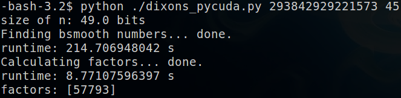

The best known algorithms for factoring numbers all require super-polynomial time. Cryptographic methods, such as RSA, rely upon this fact. Thus, prime factorization of very large numbers is an important and interesting concept to explore. Algorithms for factorization often have components that are embarrassingly parallel. Our goal is to take advantage of this by porting a particular factorization algorithm, Dixon's method, to CUDA.
The above link has more information about how Dixon's algorithm works, but for our purposes, there are two major points: B-smooth numbers, and congruence of squares. The latter states that given a number N, if we can find two numbers x and y such that their squares are congruent mod N, (x+y) and (x-y) will each contain a factor of N. These numbers are rare and hard to find efficiently with a naive search. Dixon's method utilizes B-smooth numbers to aid in finding congruent squares, leading to factors of N.
For a number A to be "B-smooth," all primes that divide A must be smaller than B. For example, 10-smooth numbers, when decomposed into primes, can be represented as 2^a*3^b*5^c*7^d. B-smooth numbers are important because given a small quantity of numbers whose square mod N are B-smooth, a congruence of squares can be generated by multiplying some subset of them together. This is the premise of Dixon's method. The power of it is that small is only a few more than the number of primes less than or equal to B. All that remains is then finding B-smooth numbers and then generating a congruence of squares from them. For fixed B, the post-processing of the B-smooth numbers can be done in constant time. Thus, all that really needs optimizing is finding the B-smooth numbers themselves. Better yet, testing numbers for B-smoothness can be done independently, so this component of the algorithm can be parallelized.
The bulk of our code is a CUDA kernel that searches for numbers A between the square root of N and N that satisfy the following condition: A*A mod N is B-smooth. With enough of these numbers (and we only need a few, as mentioned above), some combination of their product will result in a square and possibly yield a factor. The kernel searches for one B-smooth number per block. The distribution of B-smooth numbers is uniform overall, so we simply begin checking the first T numbers greater than the square root of N, then jumping to the next T numbers, and so on. When a block finds a B-smooth number, it writes out the number to global memory and exits.
We began this project with a simple implementation written in pure C++/CUDA, where the B-smooth kernel is hard-coded. However, there were some downsides to doing this. The most obvious is the maximum size data-types that CUDA supports. Since there is a square operation in our algorithm, the largest N that CUDA can operate on with 64-bit integer types is smaller than 32 bits. Doing factorization on numbers this small is not very interesting, since a serial, naive approach can factor numbers of this size in little time on modern hardware.
Thus, our next milestone was to build support into CUDA, in the form of in-line subroutines, that would allow for arbitrarily large numbers. To hard-code this would be difficult, since we want to limit the amount of memory overhead in storing large numbers. PyCUDA became and ideal fit for this, since we could template the subroutines we needed for operations on large numbers with python, and dynamically decide the sizes of these numbers at runtime. Thus, the B-smooth search runs in a runtime-generated CUDA kernel, and the post-processing that extracts factors runs in Python.
PyCUDA also allowed us to tune other important variables in our algorithm, such as the value of B. Having a higher value of B increases the density of B-smooth numbers in the search space, but also makes the calculations more intensive. Thus, while we may find B-smooth numbers faster, extracting factors from the may take longer.
The interface to our program is quite simple. The entire program in encapsculated in one python file, dixons_pycuda.py. It can be run in an environment that supports both CUDA and pyCUDA. To set this up on the resonance cluster, follow this how-to. The command usage is:
Where n is the number to factor, and b is an optional parameter indicating that we want to search for numbers of smoothness b. For example, if you run:
The program will search for numbers that are 45-smooth with respect to 293842929221573, i.e. numbers whose prime factorization consists of primes ≤45. Running this command will output:
You'll notice that this does not show the other factor, 5084403461. Dixon's method does not guarantee finding all factors after a single iteration. The idea here is that we really only need one factor, and if necessary, we can run the algorithm again on a much smaller number (it is also assumed that the input, n, is not divisible by small primes, since this can naively be determined beforehand). In this case, 293842929221573 is of the form p*q, allowing us to determing 5084403461 quickly once finding 57793.
By auto-tuning the value of b, we were able to find the most efficient factor base for both discovering B-smooth numbers and extracting factors from them. A default value is coded in the file, which is used if b is not supplied. Preliminary results indicate that we achieved a speedup of over 800x against a regular implementation of Dixon's. Unfortunately, however, our improvements are still limited by the asymptotic behavior of factorization, and runtime increases sharply as the the bit-size of our input increases.
Since much of our efforts went into supporting big numbers on CUDA, we did not have the time to extend our implementation to a clustered environment. However, our code easily lends itself to such an extension, as the blocks in a kernel run almost entirely independently of each other. Just changing a parameter to the function that generates the CUDA kernel is sufficient to make the kernel work on multiple nodes without causing unnecessary overlap of work. This could be done through the use of clustering through MPI or ZeroMQ.
In addition, the second portion of the algorithm, extracting factors from the B-smooth numbers, also have portions that could be parallelized. In our experience, however, since we have had success with small values of B on a variety of input sizes, the amount of work this portion of the algorithm has to do essentially remains constant.
dixons_pycuda.py is available here